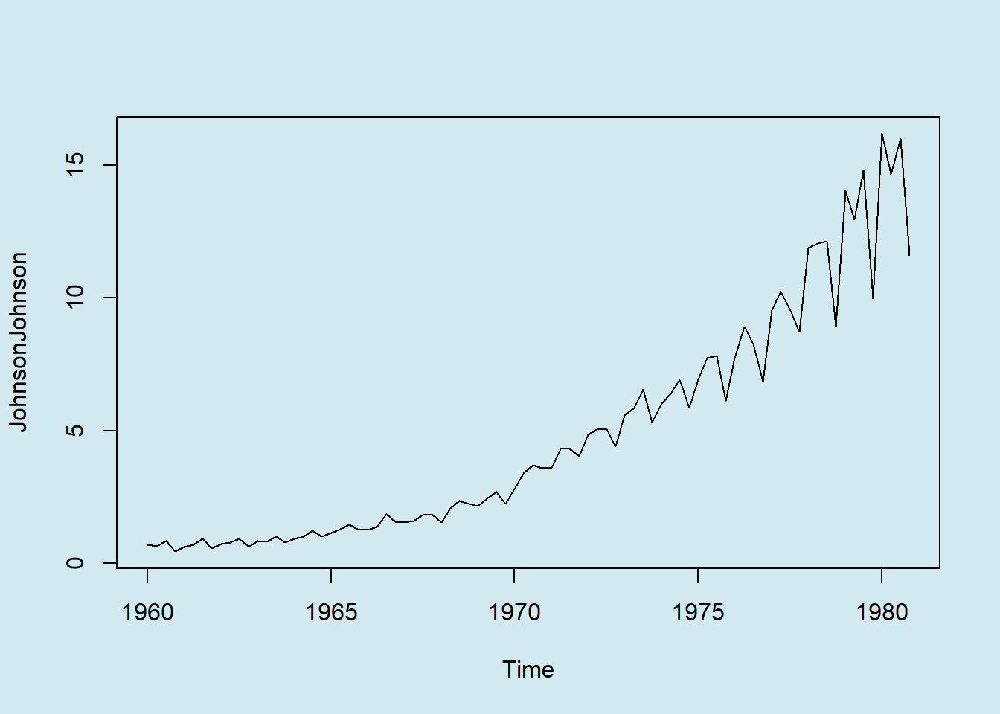
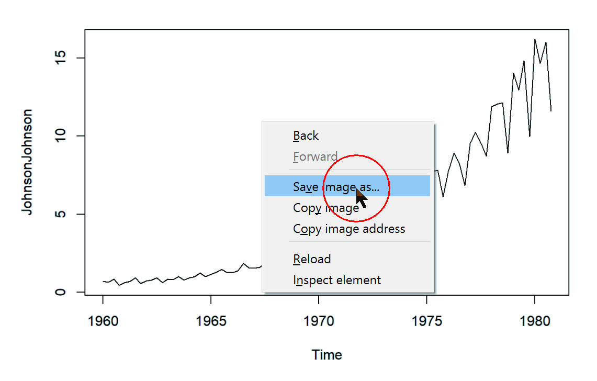
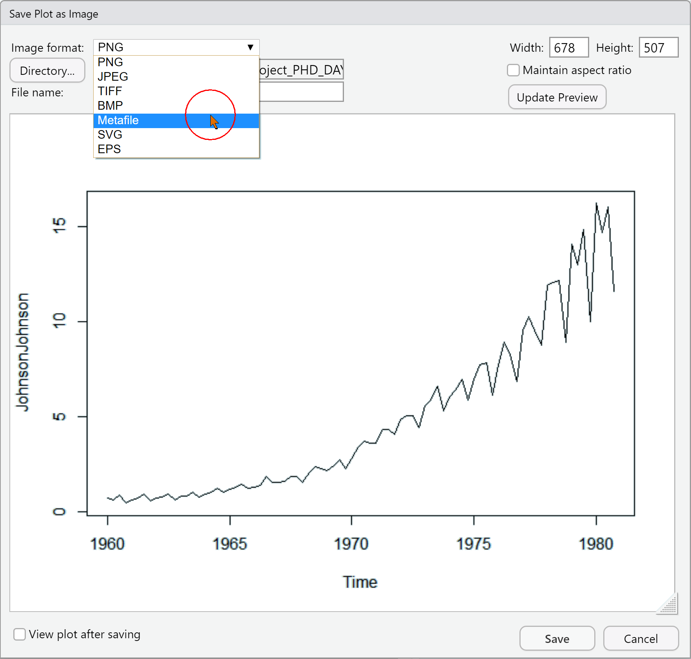
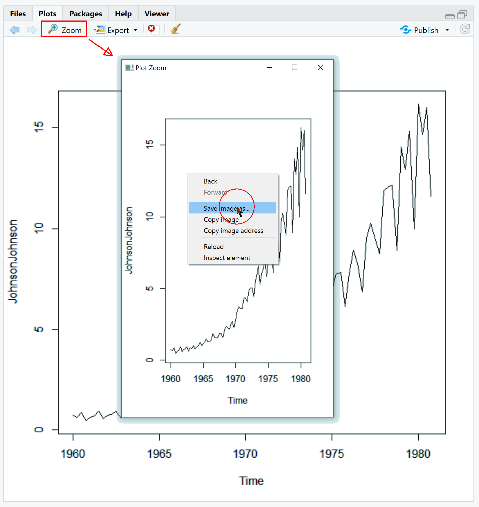

Workshop 4 Saving your plot
Let us conclude with a quickly overview on the number of ways one to persist a plot in R and RStudio. We will be first quickly drawing a plot:
plot(JohnsonJohnson)
4.1 Using the Report
Simply right-click on the report to export the generated plot into a png file:

4.2 Using RStudio’s export function
If you plot from within the console, your plot will appear in teh Plots tab.


Similarly you can use the Zoom functionality:

4.3 Programmatoricaly
Of course, there is also a way to export plot from within your script or notebook:
svg("img/J&J_Quaterly.svg", 300, 600)
plot(JohnsonJohnson)
dev.off()## png
## 2jpeg("img/J&J_Quaterly.jpg", 300, 600)
plot(JohnsonJohnson)
dev.off()## png
## 2tiff("img/J&J_Quaterly.tif", 300, 600)
plot(JohnsonJohnson)
dev.off()## png
## 2png("img/J&J_Quaterly.png", 300, 600)
plot(JohnsonJohnson)
dev.off()## png
## 2